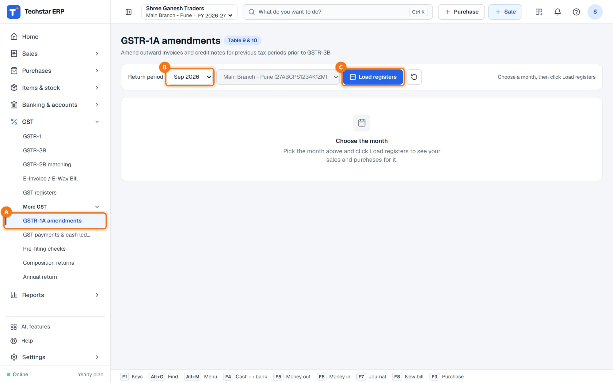
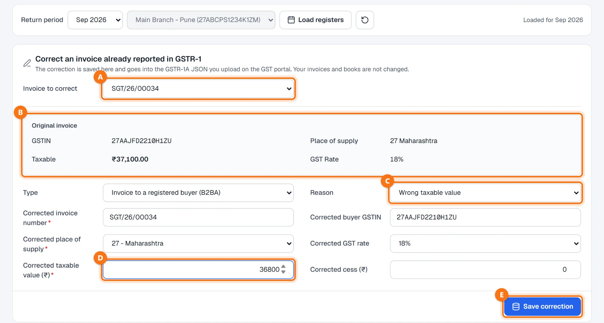
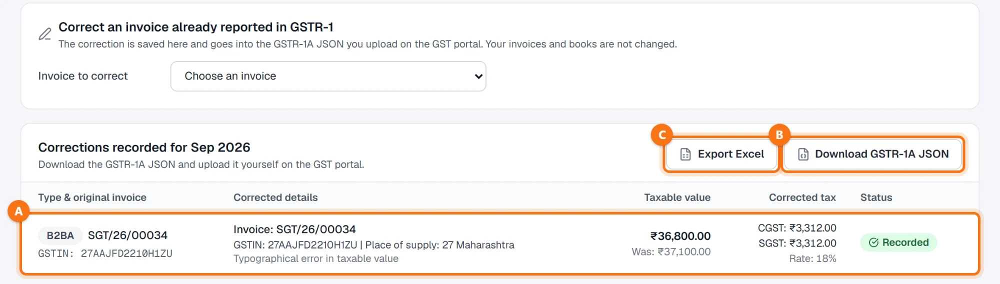

Techstar ERP हिंदी और मराठी में भी इस्तेमाल कर सकते हैं। ऊपर दाईं ओर अपने नाम के पहले अक्षर वाले गोल बटन पर click करें → Language (भाषा) → हिन्दी। ERP का menu हिंदी में दिखेगा (जैसे Sales = बिक्री)। बिल और दूसरे कानूनी दस्तावेज़ हमेशा की तरह छपते हैं। इस guide के screenshots English menu के हैं।
शुरू करने से पहले
GSTR-1 में पहले बताए इनवॉइस के लिए। जैसा स्क्रीन पर लिखा है, GSTR-1A से किसी महीने का GSTR-3B भरने से पहले उस महीने के इनवॉइस और क्रेडिट नोट ठीक किए जाते हैं।
ERP दर्ज करता है, आप भरते हैं। सुधार यहाँ save होता है और GSTR-1A JSON में जाता है। GST पोर्टल को कुछ नहीं भेजा जाता: JSON आप upload करते हैं और GSTR-1A वहीं भरते हैं।
आपका GSTIN save होना चाहिए — Settings → Business details & GST में। CGST + SGST या IGST उसी से तय होता है और JSON के लिए भी ज़रूरी है।
GSTR-1A खोलें और महीना load करें
बाईं ओर के menu में GST → More GST → GSTR-1A amendments A खोलें (हिंदी menu में: GST → और GST → GSTR-1A सुधार)। इनवॉइस का Return period B चुनें — उदाहरण में सितंबर 2026, जिसका GSTR-1 पहले ही भरा जा चुका है — और Load registers C पर click करें।

इनवॉइस चुनें
Invoice to correct A में महीने की सूची से इनवॉइस चुनें। जैसा बताया गया था, वैसी जानकारी Original invoice B के नीचे दिखती है: ग्राहक का GSTIN, place of supply, taxable value और GST रेट।
Type इनवॉइस से अपने आप तय होता है — Invoice to a registered buyer (B2BA), Large invoice to an unregistered buyer in another State (B2CLA), Credit / debit note (CDNRA) या Export invoice (EXP-A)। गलत हो तभी बदलें।
सुधार डालें
Reason C चुनें — Wrong taxable value, Wrong buyer GSTIN, Wrong place of supply, Wrong GST rate या Other — और जो गलत था वह field बदलें:
| Field | क्या डालें |
|---|---|
| Corrected invoice number | इनवॉइस से भरा होता है; नंबर ही गलत हो तभी बदलें। |
| Corrected buyer GSTIN | सही GSTIN। बिना रजिस्ट्रेशन वाले ग्राहक के लिए खाली छोड़ें। |
| Corrected place of supply | सही राज्य। उससे ERP CGST + SGST (आपका अपना राज्य) या IGST (दूसरा राज्य) तय करता है। |
| Corrected GST rate | सही रेट। |
| Corrected taxable value (₹) D | सही taxable value — उदाहरण में ₹37,100 की जगह ₹36,800। |
| Corrected cess (₹) | cess लागू हो तो। |

सुधार save करें
Save correction (ऊपर बॉक्स E) पर click करें। सुधार Corrections recorded for Sep 2026 A के नीचे दिखता है: प्रकार और मूल इनवॉइस, सही जानकारी और कारण, नई taxable value और पुरानी (Was), सही टैक्स और स्थिति Recorded।

GSTR-1A JSON डाउनलोड करें
Download GSTR-1A JSON B पर click करें। फ़ाइल में (नाम GSTR1A_<GSTIN>_2026-09.json जैसा) महीने के सारे सुधार होते हैं। उसे खुद GST पोर्टल पर upload करें और GSTR-1A वहीं भरें। Export Excel C वही सुधार आपके रिकॉर्ड या CA के लिए worksheet के रूप में देता है।
GSTR-1A से बताई गई जानकारी बदलती है, आपका हिसाब नहीं। अगर इनवॉइस ही हिसाब में बदलना हो तो अपने accountant की सलाह से क्रेडिट या डेबिट नोट इस्तेमाल करें।
आम सवाल
क्या सुधार save करने से मेरा इनवॉइस या हिसाब बदलता है?
क्या Techstar ERP GSTR-1A भरता है?
मेरा इनवॉइस सूची में क्यों नहीं है?
सही टैक्स कैसे गिना जाता है?
और guides
Screenshots Techstar ERP की demo कंपनी के हैं (Shree Ganesh Traders, Pune)। सभी नाम, GSTIN, रकम और दस्तावेज़ों के नंबर नमूना जानकारी हैं।